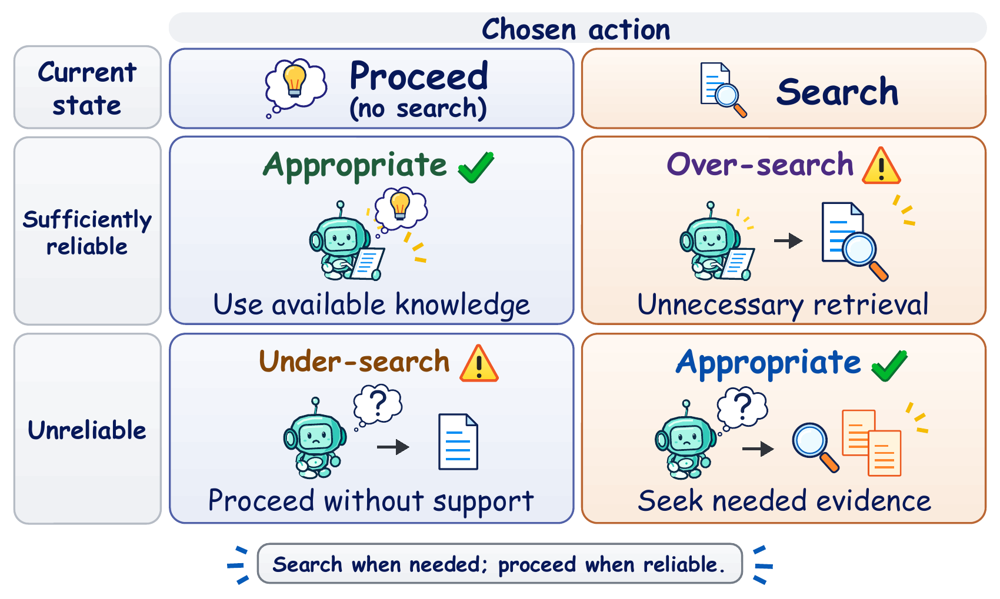
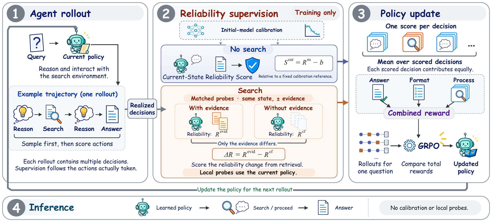
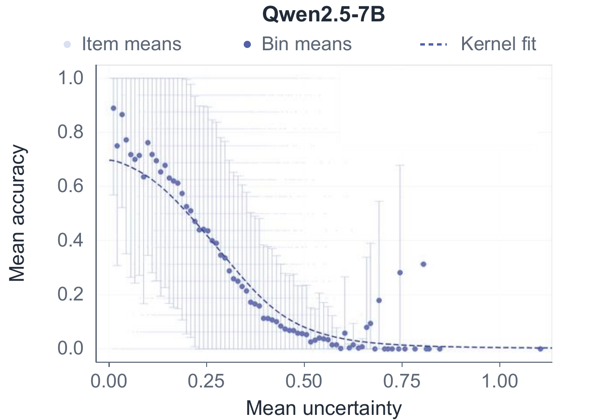
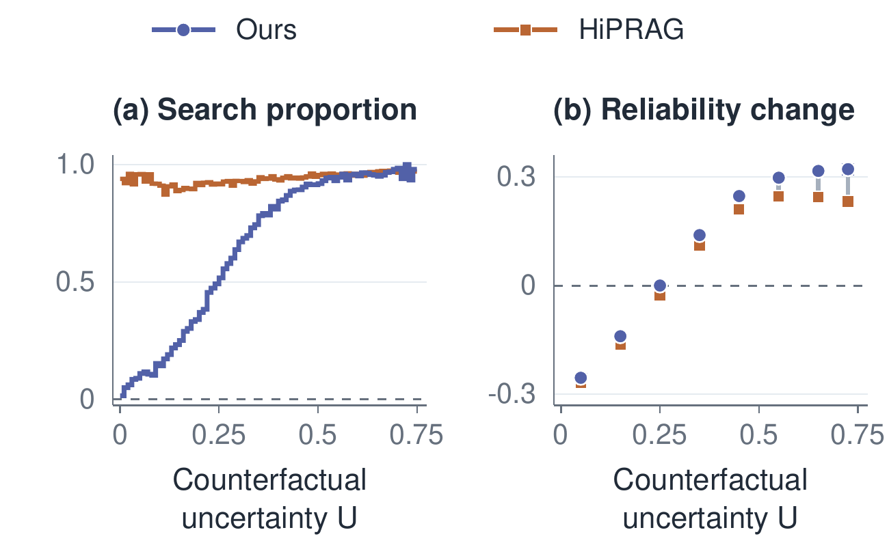

Proceed with current knowledge
A no-search step earns a positive score when its estimated reliability exceeds the backbone’s fixed calibration reference.
ReliSearch
arXiv preprint · October 2026Beijing Institute of Technology Beijing, China
* Corresponding author
Overview
A model can guess the right answer or look up a fact it already knows. In both cases, final-answer accuracy tells us little about whether the search decision was sound.
ReliSearch asks what the model could reliably conclude at each step, and how much a search improved that conclusion.
Efficient agentic search requires large language models (LLMs) to determine whether they can reliably proceed with their current knowledge or need additional external evidence. Supervision based on final-answer correctness or trajectory-level feedback evaluates realized trajectory performance. However, observed trajectory performance is jointly shaped by stochastic generation, retrieval quality, and downstream reasoning. Such signals therefore provide only indirect evidence of how reliable the current decision state was and how retrieved evidence changed its reliability. An effective reward should encourage search when external information is needed and favor searches that contribute to the answer. To this end, we propose a metacognitive framework for training LLMs to make search decisions based on the reliability of their intermediate reasoning states. Our framework estimates the reliability of local conclusions to distinguish whether the current information supports proceeding without search from how much retrieved evidence improves that reliability. The current-state reliability score assesses whether the model can proceed without search. The search-action score measures how retrieved evidence changes estimated reliability. Together, these scores define a reliability-aware process reward for Group Relative Policy Optimization (GRPO), providing finer-grained supervision for search and no-search behavior. Experiments across seven question-answering benchmarks demonstrate that our method achieves a better accuracy-efficiency trade-off than strong agentic-search baselines. Our code and model checkpoints will be open-sourced.

Method
During training, local probes sample alternative conclusions at each reasoning step. A calibration curve maps their uncertainty to an estimate of local accuracy.

A no-search step earns a positive score when its estimated reliability exceeds the backbone’s fixed calibration reference.
Two probes share the same reasoning and query. Their difference in reliability, with and without the returned passages, measures the value of the search.
Experiments
With Qwen2.5-7B, ReliSearch improves on HiPRAG’s answer accuracy across all seven benchmarks. In the controlled evaluation, the policy averages 1.64 searches per question, compared with HiPRAG’s 1.76.
Compare ReliSearch with HiPRAG on Qwen2.5-7B. Select a dataset to inspect its reported scores.
| Method | CEM (%) | Calls / question |
|---|---|---|
| ReliSearch | ||
| HiPRAG |
CEM values come from the main comparison. Search counts come from the controlled evaluation. Tables 1–2 and Figure 4
Click a column heading to sort. Overall covers all seven datasets.
| Method | Overall | NQ | TriviaQA | PopQA | HotpotQA | 2Wiki | MuSiQue | Bamboogle |
|---|---|---|---|---|---|---|---|---|
| Direct Inference | 31.5 | 27.0 | 26.8 | 40.1 | 58.7 | 16.0 | 7.9 | 15.9 |
| Standard RAG | 48.0 | 51.2 | 54.7 | 65.7 | 56.9 | 21.6 | 18.5 | 18.6 |
| IRCoT | 39.0 | 27.5 | 36.0 | 42.5 | 51.4 | 37.6 | 19.4 | 20.6 |
| Search-o1 | 48.1 | 40.2 | 42.2 | 58.5 | 56.1 | 45.6 | 15.1 | 19.3 |
| R1-Searcher | 61.2 | 60.0 | 73.0 | 58.2 | 60.4 | 60.3 | 32.9 | 55.8 |
| R1-Searcher++ | 62.8 | 61.0 | 73.5 | 59.0 | 64.2 | 63.2 | 32.3 | 58.7 |
| Search-R1 | 60.4 | 61.2 | 73.6 | 56.5 | 54.0 | 63.6 | 24.8 | 48.4 |
| β-GRPO | 62.4 | 65.0 | 75.0 | 60.0 | 53.0 | 66.0 | 24.0 | 52.0 |
| HiPRAG | 67.2 | 71.2 | 76.3 | 63.2 | 62.4 | 71.7 | 34.1 | 52.8 |
| ReliSearch | 69.3 | 74.3 | 77.7 | 66.8 | 66.1 | 71.8 | 35.2 | 58.4 |
| Method | Overall | NQ | TriviaQA | PopQA | HotpotQA | 2Wiki | MuSiQue | Bamboogle |
|---|---|---|---|---|---|---|---|---|
| Direct Inference | 0.00 | 0.00 | 0.00 | 0.00 | 0.00 | 0.00 | 0.00 | 0.00 |
| Standard RAG | 1.00 | 1.00 | 1.00 | 1.00 | 1.00 | 1.00 | 1.00 | 1.00 |
| IRCoT | 1.58 | 1.41 | 1.30 | 1.25 | 1.70 | 2.06 | 2.18 | 1.70 |
| Search-o1 | 1.16 | 1.08 | 1.08 | 1.04 | 1.26 | 1.27 | 1.44 | 1.38 |
| Search-R1 | 1.53 | 1.27 | 1.30 | 1.31 | 1.67 | 1.89 | 2.05 | 1.66 |
| R1-Searcher | 1.41 | 1.19 | 1.20 | 1.21 | 1.53 | 1.75 | 1.80 | 1.49 |
| Search Wisely | 1.83 | 1.36 | 1.55 | 1.65 | 1.94 | 2.26 | 2.36 | 2.02 |
| HiPRAG | 1.76 | 1.31 | 1.49 | 1.57 | 1.88 | 2.18 | 2.27 | 1.90 |
| ReliSearch | 1.64 | 1.09 | 1.20 | 1.21 | 1.91 | 2.38 | 2.43 | 1.94 |
ReliSearch improves average CEM over HiPRAG on all three backbones. Each backbone uses its own mapping from uncertainty to reliability.
Table 3 in the paper| Backbone | HiPRAG CEM (%) | ReliSearch CEM (%) | Gain (points) |
|---|---|---|---|
| Qwen2.5-3B | 64.4 | 65.9 | +1.5 |
| Qwen2.5-7B | 67.2 | 69.3 | +2.1 |
| Llama-3.2-3B | 64.8 | 66.1 | +1.3 |
Scoring both actions gives the highest CEM. With both scores active, replacing the empirical mapping with raw confidence lowers CEM by 4.0 points.
Table 4 in the paper| Variant | Reliability scale | CEM (%) |
|---|---|---|
| Base (answer and format) | — | 61.2 |
| Current-state score only | Empirical mapping | 63.4 |
| Search-action score only | Empirical mapping | 62.3 |
| Both scores, raw confidence | exp(−U) | 61.9 |
| Full (both scores) | Empirical mapping | 65.9 |
The Qwen2.5-3B-Instruct study varies the process-reward weight while keeping the answer and format rewards fixed. The default weight of 0.2 achieves the highest CEM of the tested settings.
Table 5 in the paperMean time per optimization step increases by 14.6% over the HiPRAG reimplementation. Local probes take longer to score, while rollout generation and other operations take less time.
Figure 8 in the paper| Training phase | HiPRAG (s) | ReliSearch (s) | Change (s) |
|---|---|---|---|
| Rollout generation | 501.62 | 427.58 | −74.04 |
| Reward scoring | 46.18 | 334.28 | +288.10 |
| Other operations | 618.43 | 574.20 | −44.23 |
| Total step time | 1,166.23 | 1,336.06 | +169.83 |
Decision-level analysis


Case study · MuSiQue dev_98
Select a search or answer to inspect each model’s trajectory.
Figure 9 in the paper2 searches
1 search
@misc{sun2026searchwhenneeded,
title = {Search When Needed, Proceed When Reliable: Metacognitive Reliability Supervision for Efficient Agentic Search},
author = {Minhao Sun and Zhijing Wu and Xian-Ling Mao},
year = {2026},
eprint = {2610.41738},
archivePrefix = {arXiv},
primaryClass = {cs.IR},
doi = {10.48550/arXiv.2610.41738},
url = {https://arxiv.org/abs/2610.41738}
}